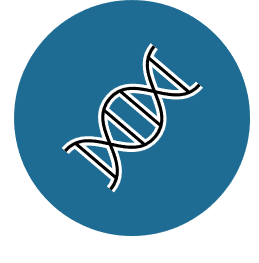
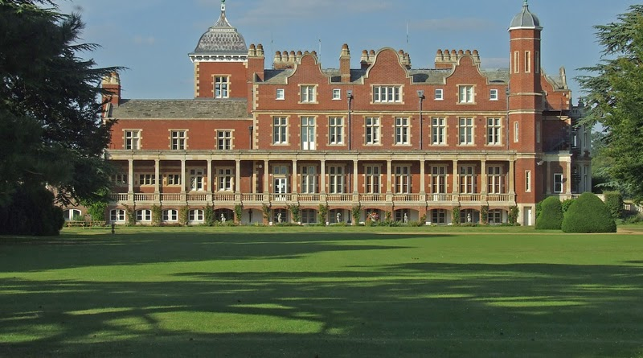

Epigenetics and epigenomics
GMO5 - Epigenetics and epigenomics

The completion of the human genome project has paved the way for major advances in our understanding of human genetic disease and the pathogenesis of cancer. Nevertheless, these advances have also revealed that genetics is only part of the story and there is increasing recognition that epigenetics will be critical for understanding human disease and the practice of genomic medicine. Cambridge is the leading European centre for epigenetic research and this module will draw on world-leading local scientists to provide expert coverage of this fascinating topic.
What will I study in this module?
In GMO5 you will learn about:
Definition and history of epigenetics
Elements of epigenetic gene regulation: chromatin packaging, nucleosomes, histone marks, establishment and maintenance of DNA methylation, non-coding RNAs etc.
Methodologies for investigating epigenetics regulation in health and disease
Genomic resources for epigenetic research and interpretation. The Epigenome Project
Role of model organisms in elucidating epigenetic control mechanisms
Mechanisms of epigenetic regulation of gene expression in normal development (including nuclear reprogramming, X-chromosome inactivation and genomic imprinting)
Epigenetics and inherited disease: inherited disorders caused by mutations in genes regulating epigenetic processes, human imprinting disorders, assisted reproductive technologies
Epigenetics and acquired disease: epigenetics and cancer, epigenetics and gene/environmental interactions, epigenetics and ageing
Epigenetics and therapeutics
What will I be able to achieve at the end?
By the end of this module students will be able to:
Understand the role of epigenetic factors in regulating gene expression
Appreciate the critical role of epigenetics in normal development and human health
Critically appraise methodologies for epigenetic studies of human disease
Understand the role of epigenetic abnormalities in human disease, and in particular, the role in inherited disorders and neoplasia
Describe the relevance of epigenetics for gene-environment interactions and the significance of epigenetics for therapeutic strategies for human diseases such as cancer

Preserved from https://www.genomics.cam/modules/epigentics-and-epigenomics on 10 September 2026. Linked external services may require internet access. The original source snapshot is included with the migration files.